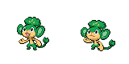

Mirror Gold Pokédex
PANSAGE

Type:
Grass
Abilities:
Gluttony
Base Stats
HP
Atk
Def
Sp. Atk
Sp. Def
Speed
50
53
48
53
48
64
Evolves To
Evolves into
SIMISAGE
via stone
Leaf Stone
Level-Up Moves
Level
Move
1
Scratch
4
Leer
7
Lick
10
Vine Whip
13
Fury Swipes
16
Leech Seed
19
Bite
22
Seed Bomb
25
Torment
28
Fling
31
Acrobatics
34
Grass Knot
37
Recycle
40
Natural Gift
43
Crunch
Wild Locations
Mt. Mortar (Waterfall room) (Night)
Route 9 (Day)
Route 9 (Morning)
Back to Pokédex Index